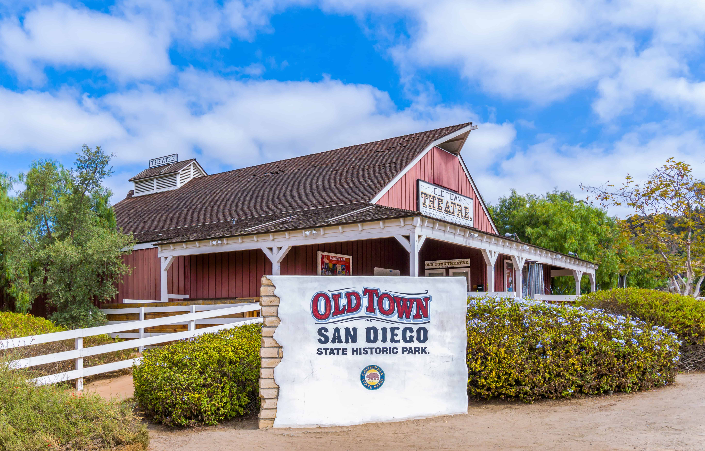

World History — Semester 1, Lesson 02
In the summer of 1789, a woman named Marie Grosholtz stood at the gates of a Paris prison called the Bastille. She was 28 years old. The crowd around her was furious: furious about bread prices, about taxes, about a king who never listened. By the end of that day, the prison had fallen, and a revolution had begun that would shake every throne in Europe.
What pushed ordinary people to risk their lives against kings and emperors? The answer begins not in the streets of Paris, but in the libraries and coffee houses of Europe a century earlier, where a new way of thinking was spreading fast. It was called the EnlightenmentA movement in the 1600s and 1700s when European thinkers argued that reason and science, not tradition and kings, should guide society and government.. And once those ideas got loose, no government was ever truly safe again.

John Locke, portrait by Godfrey Kneller, 1697. Wikimedia Commons.
For most of human history, people believed kings ruled because God chose them. This idea was called the divine right of kings. No one was supposed to question it. Then, in the 1600s and 1700s, a group of European thinkers began asking a dangerous question: What if kings do not get their power from God? What if they get it from the people?
An English philosopher named John Locke argued that all people are born with three basic rights: life, liberty, and property. He said that people form governments to protect those rights. And here was the explosive part: if a government fails to protect those rights, the people have the right to replace it. Locke called this the social contractThe idea that governments get their power from the agreement of the people they govern, and if the government breaks that agreement, the people can change it.. This was not just a philosophical argument. It was a blueprint for revolution.

Baron de Montesquieu, French political philosopher, 18th century. Wikimedia Commons.
A French thinker named Montesquieu went further. He studied governments around the world and argued that no single person should hold all the power. He proposed dividing government into three separate branches: one to make laws, one to carry them out, and one to judge whether they are fair. When the American founders built their government, they used Montesquieu's design almost exactly.
A third thinker, Jean-Jacques Rousseau, argued that sovereignty — the right to rule — belongs to the people, not to kings. He said that a just government must represent the will of all citizens. Kings who ruled only for themselves were not just tyrants; they were thieves, stealing power that belonged to everyone. These three men: Locke, Montesquieu, and Rousseau, handed the coming generations the words and the arguments they needed to justify revolution.
Today, when politicians argue about whether the government is overstepping or failing the people, they are still using the framework these thinkers built. The debate has never stopped.
"Whenever the legislators endeavour to take away and destroy the property of the people, or to reduce them to slavery under arbitrary power, they put themselves into a state of war with the people, who are thereupon absolved from any farther obedience."
John Locke, Second Treatise of Government, 1689
Locke wrote this in 1689 — and within 90 years, American colonists and French revolutionaries were quoting it while picking up weapons against their own governments.
1. In your own words, what is Locke saying a government must never do? What happens if it does?
2. How does this connect to our Essential Question? What idea is Locke giving to people who want to overthrow their government?
The ideas of the Enlightenment did not stay in books. Between 1688 and 1789, three different countries took those ideas and used them to change their governments forever. Each revolution built on the last one.

English Bill of Rights, 1689, Parliamentary Archives, London. Wikimedia Commons.
England went first. In 1688, Parliament removed King James II without a single battle in what historians call the Glorious Revolution. Parliament replaced him with a new monarch who agreed to share power. In 1689, England produced a Bill of Rights that limited what the king could do. England became a constitutional monarchyA government where a king or queen rules, but their power is limited by a written set of laws that they must follow.. The king still existed, but Parliament now held real power.
America went next. By the 1760s, American colonists were reading Locke and arguing that the British Parliament had no right to tax them without their consent. In 1776, Thomas Jefferson sat down and wrote the Declaration of Independence. He took Locke's ideas almost word for word: all men are created equal; they have unalienable rights; when a government destroys those rights, the people may alter or abolish it.

Declaration of Independence, original parchment, 1776. National Archives, Washington, D.C. Wikimedia Commons.
France exploded next. By 1789, French citizens were starving while the royal family lived in a palace of gold at Versailles. When the French Revolution began, it borrowed language directly from Jefferson's Declaration. The French produced their own document: the Declaration of the Rights of Man and Citizen. It declared that sovereigntyThe right to rule; the highest authority in a government — the idea that the power to govern belongs to someone or something, whether a king, a people, or a constitution. belongs to the people, not the king.
But the French Revolution did not stay peaceful. By 1793, the revolutionary government was executing thousands of people — including the king and queen — in what became known as the Reign of Terror. The revolution that promised liberty turned into a machine of death. This is the pattern that would repeat in revolutions across the next two centuries: the overthrow of one tyrant often created the conditions for another.

Declaration of the Rights of Man and of the Citizen, France, 1789. Wikimedia Commons.
| Revolution | Country & Year | Key Document | What Changed |
|---|---|---|---|
| Glorious Revolution | England, 1688 | English Bill of Rights (1689) | King shares power with Parliament; first constitutional monarchy |
| American Revolution | United States, 1776 | Declaration of Independence (1776) | Colonies break from Britain; republic formed with elected government |
| French Revolution | France, 1789 | Declaration of the Rights of Man (1789) | Monarchy abolished; sovereignty declared to belong to the people |
When immigrants came to the United States from countries with no free elections, they often said they came for freedom. That freedom was defined by the American Revolution. The words in those founding documents still shape who gets to enter this country and what rights they are promised when they arrive.


Left: Simón Bolívar, Liberator of South America, 19th century portrait. Right: Miguel Hidalgo y Costilla, who launched Mexico's independence movement in 1810. Wikimedia Commons.
By 1810, the fire of revolution had jumped the Atlantic. In the Spanish colonies of Latin America, people had been watching the American and French revolutions for decades. They had the same complaints: colonial governments taxed them without representation; Spanish-born officials held all the power; people born in the Americas were treated as second-class subjects. The ideas of Locke and Rousseau had traveled south, and now they were about to ignite.
In Mexico, a Catholic priest named Miguel Hidalgo rang his church bell before dawn on September 16, 1810. He gave a speech that historians call the Grito de Dolores: the Cry of Dolores. He called on mestizos, Indigenous people, and poor farmers to rise up against Spanish rule. His followers had farm tools, not weapons. They were defeated militarily. But the spark was lit; Mexico would win its independence in 1821.
In South America, a Venezuelan general named Simón Bolívar led an army across mountains that Napoleon's generals had said were impassable. Between 1810 and 1825, Bolívar liberated six countries. He read Locke and Montesquieu. He quoted Jefferson. He believed that nationalismThe strong belief that people who share a culture, language, or history should govern themselves as one independent nation, not be ruled by a foreign power. — pride in your own people and land — was powerful enough to defeat any empire.

Mural depicting the Grito de Dolores, Hidalgo's 1810 call for Mexican independence. Wikimedia Commons.
But Latin American independence movements faced a challenge that the American Revolution had avoided. The United States was built mostly by one ethnic group with shared English legal traditions. Latin American countries were made up of Spanish colonizers, Indigenous peoples, enslaved Africans, and mixed-race populations with no shared history of self-governance. Building a unified nation out of those groups was enormously hard. Many of the new republics quickly fell into civil wars and military dictatorships.
September 16 is still celebrated in Mexico as Independence Day. Across San Diego and California, communities with deep Mexican roots mark that day every year. The revolution Hidalgo started is part of the history that built the border you see today.
"We hold these truths to be self-evident, that all men are created equal, that they are endowed by their Creator with certain unalienable Rights, that among these are Life, Liberty and the pursuit of Happiness. That to secure these rights, Governments are instituted among Men, deriving their just powers from the consent of the governed."
Thomas Jefferson, Declaration of Independence, July 4, 1776
Jefferson pulled these exact ideas from Locke's Second Treatise, rewrote them in plain language, and changed the course of history — every revolutionary movement for the next 200 years would quote these words.
1. According to Jefferson, where does a government get its power? What does that mean for a government that stops protecting people's rights?
2. How does this document connect to our Essential Question? What idea in it explains why people would risk their lives to overthrow a government?

The Coronation of Napoleon, Jacques-Louis David, 1807. Louvre Museum, Paris. Napoleon crowning himself Emperor — the moment that shocked Europe and betrayed the revolution. Wikimedia Commons.
Out of the chaos of the French Revolution came one of the most complicated figures in modern history. Napoleon Bonaparte was a short military general from the island of Corsica. By 1799, he had seized control of France. He told the French people he was saving the revolution. He promised order, law, and national pride.
And in some ways, he delivered. Napoleon created the Napoleonic Code: a set of laws that guaranteed equal treatment under the law and was based on the principles of the Revolution. He spread those laws across Europe as his armies conquered country after country. He abolished feudal systems that had kept peasants bound to land for centuries. For millions of people, Napoleon's conquests actually meant more freedom, not less.

The Napoleonic Code, Code Civil des Français, 1804. Wikimedia Commons.
But Napoleon also betrayed the revolution's central promise. In 1804, in the cathedral of Notre-Dame in Paris, he took the crown from the Pope's hands and placed it on his own head. He declared himself Emperor. The man who had claimed to represent the people had made himself a king. Beethoven had been writing a symphony in Napoleon's honor. When he heard the news, he crossed out the dedication and called Napoleon a tyrant.
Napoleon's wars eventually turned even his supporters against him. He invaded Russia in 1812 with 600,000 soldiers. Fewer than 100,000 returned. He was finally defeated in 1815 at the Battle of Waterloo. The old monarchies of Europe rushed back in to fill the vacuum. Kings were restored. The revolutions seemed to have failed.
But they had not failed. NationalismThe strong belief that people who share a culture, language, or history should govern themselves as one independent nation, not be ruled by a foreign power. — the idea that people have the right to govern themselves — had been released into the world. Napoleon's armies had carried that idea into every corner of Europe and Latin America. Even in defeat, the revolutions had changed what people believed was possible. No monarch would ever feel completely safe again.

Old Town San Diego State Historic Park — built during the Spanish colonial era and transformed by Mexican independence in 1821. Wikimedia Commons.
When Mexico won independence from Spain in 1821, the change reached all the way to the California coast. The small Spanish settlement of San Diego de Alcalá — a presidio, a mission, and a pueblo — suddenly became part of a new Mexican republic. The soldiers stationed there swore allegiance to Mexico instead of Spain. The same revolutionary ideas that Bolívar and Hidalgo had used to justify independence were now reshaping everyday life in what is today Old Town San Diego.
When California became a U.S. state in 1850 after the Mexican-American War, it inherited Mexican land law, Mexican place names, and communities that had lived through three different governments: Spanish colonial, Mexican republican, and finally American. The revolutions of this lesson did not just happen in Paris and Caracas; they happened here too.
The revolutions in this lesson did not just change governments in the 1700s and 1800s. They rewrote the rules of what a government is allowed to do and what citizens are allowed to demand. That rewrite is still happening. When citizens protest today, they are using the language of Locke and Jefferson. When a government uses force to silence protesters, we call it tyranny because people in this era gave us that word and its meaning.

Civic protest at the U.S. Capitol, Washington, D.C. Citizens exercising the right to challenge their government: a right that people in this lesson risked their lives to establish. Wikimedia Commons.
Locke said people have the right to replace a government that fails them. What does that look like in a country with free elections; and what does it look like in a country that does not have them?